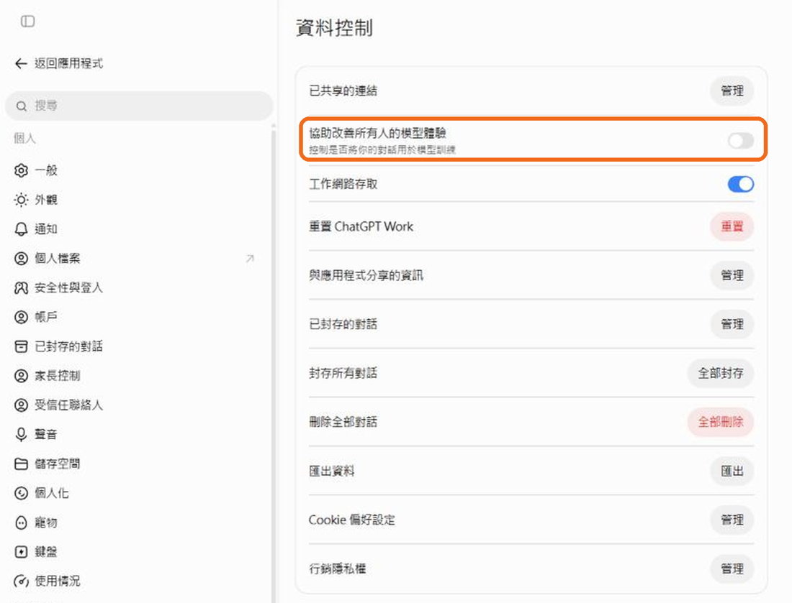
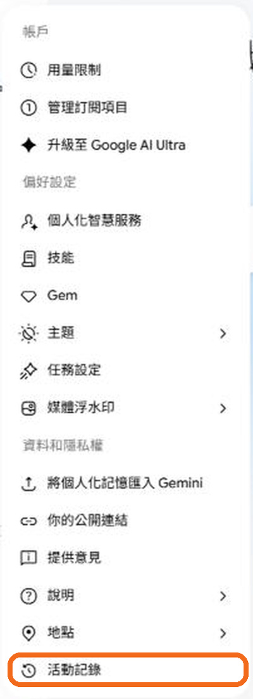
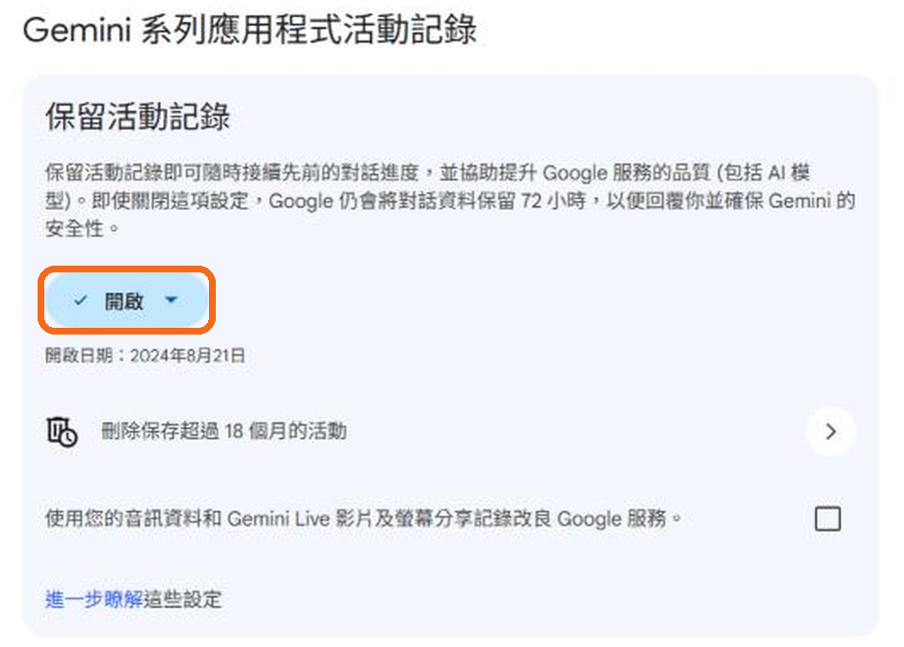
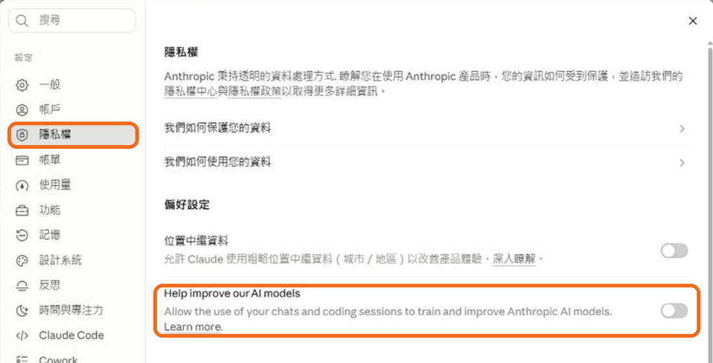

資料包
點檔名直接下載。CSV 用 Excel 開若是亂碼，改用記事本開。
00 禾光委託信總經理的委託｜開場
01 禾光公司簡介公司背景
01 個人加班紀錄 CSV10:25｜只在自己電腦開，不要貼給 AI
02 群組加班彙總 CSV10:25｜可以貼給 AI
03 CSV 學員工作單10:25
張凱婷：三則原始回答11:05｜AI 偵探
張凱婷｜第 1 次原始對話 ↗ChatGPT 分享連結
張凱婷｜第 2 次原始對話 ↗ChatGPT 分享連結
張凱婷｜第 3 次原始對話 ↗ChatGPT 分享連結
09 九月營運週報 CSV11:22｜Q5
釣魚範例信（練習用）11:37｜貼進檢查器
06 資料彙整作業規範13:10｜上傳 Gemini Notebook
07 例外情況與資料分享辦法13:10｜上傳 Gemini Notebook
08 跨部門週會逐字稿13:10｜上傳 Gemini Notebook
挑戰卡 A–E14:40｜電子版
上午提示詞
09:45Spec 卡：把「感覺」變成可驗收的需求
① 哪個片段（時間碼）：
② 哪個元素：
③ 怎麼改：
④ 要達成什麼效果：
⑤ 怎麼驗收（別人看這張卡就能判斷）：
10:45只把 02 彙總表貼給 AI
你是管理資料摘要助理。僅根據以下完全虛構的群組加班統計，產出繁體中文、120 字以內的主管摘要。
要求：
1. 說明平均加班時數最高的是哪個群組及數值。
2. 不得臆測造成差異的原因。
3. 不得宣稱相較上月增減（沒有上月資料）。
4. 明確提醒：彙總資料仍須依用途與公司政策確認能否分享。
5. 請自行驗算，並明確區分資料事實與管理建議。
群組,人數,加班總時數,平均加班時數_小時
合併支援職能（法遵＋人資）,5,66,13.2
營運,5,65,13.0
客服,6,102,17.0
11:22Q5：請 AI 找反證，不要替你下結論
以下是一家虛構公司的 9 月營運週報。
我們的初步判斷是：「＿＿＿＿＿＿＿＿」。
請不要替我下結論，只要列出：
1. 資料中支持這個判斷的證據（附欄位與數字）
2. 至少 3 個可能推翻它的證據或替代解釋
3. 還需要哪些資料才能判斷
資料：（貼上 09_九月營運週報 的內容）
11:37問 AI：這封信是不是釣魚？
以下是一封我收到的信。請告訴我：
1. 它可能是釣魚或詐騙嗎？列出可疑的地方。
2. 寄件者網址或文字裡，有沒有看起來像、但其實不同的字元？
3. 我應該用什麼方式查證（不要用信裡提供的聯絡方式）？
信件內容：（貼上）
下午提示詞
13:00三個馬上能用的技巧
開始之前，先問我 3 個你需要知道的問題，等我回答完再開始。
以下是另一個 AI 寫的內容。請挑出錯誤、沒有根據的說法，以及需要查證的數字，逐點列出。
（貼上內容）
你的任務是為目前這段對話建立一份「快照」，讓我可以開新對話接著做。
請不要逐字摘要，而是整理：主題摘要／目前進度／關鍵設定（角色、語氣、格式）／下一步。
13:25Gemini Notebook：長文摘要
請根據這三份來源，為總經理寫 5 點摘要。
每一點都要附上引用。
如果來源中有附則、例外條款或限制條件，請獨立列出，不要合併進一般說明。
無法從來源確認的內容，請標示【待確認】。
13:37Gemini Notebook：會議紀錄五欄
請只根據「08 跨部門週會逐字稿」整理會議紀錄，分成五欄：
已達成共識／意見分歧／關鍵阻礙／待驗證假設／下一步（誰、做什麼、何時）。
規則：
- 只有一個人提出、沒有其他人同意的意見，放在「意見分歧」，不要寫成決議。
- 沒有指定負責人或期限的待辦，寫【未指定】，不要自行指派。
14:53修稿指令範本
你是禾光服務有限公司的文件編輯。
讀者：＿＿＿＿ 目的：＿＿＿＿ 格式：＿＿＿＿
請依下列修改清單修改初稿：
1.（哪裡）＿＿ →（怎麼改）＿＿ →（為什麼）＿＿
2. …
限制：
- 數字只能使用我提供的資料，不要自己補。
- 不得新增任何承諾、補償或決議。
- 資訊不足時寫【待確認】。
輸出：修改後全文，以及一張「改了什麼、為什麼」的清單。
初稿：（貼上）
15:13濃縮成 3 頁簡報大綱
請把我們的修改過程濃縮成 3 頁簡報大綱，給 2.5 分鐘的口頭報告使用：
第 1 頁 我們發現的問題；第 2 頁 我們怎麼修；第 3 頁 我們學到什麼。
每頁一個主訊息、最多 3 點，每點不超過 20 字。
挑戰卡初稿
各組只要複製自己抽到的那一張。初稿是總經理室用 AI 寫的，至少藏了 4 個問題和 1 個漏掉的東西。
關掉「用我的對話訓練模型」
關掉訓練，不等於完全不保留資料。最安全的做法：不該上傳的，一開始就不要上傳。
| 平台 | 位置 | 還要知道的事 |
|---|---|---|
| ChatGPT | 點左下角你的名字 → 設定 → 資料控制 → 關閉「協助改善所有人的模型體驗」 直接開設定頁 | 按讚／倒讚的回饋，整段對話仍可能用於訓練；臨時對話最多保留 30 天。官方說明 |
| Gemini | 左下角齒輪「設定與說明」→ 活動記錄 →「保留活動記錄」下按「開啟 ▾」→ 改成「關閉」 直接開活動記錄 | 即使關閉，Google 仍會將對話保留 72 小時，用來回覆你並確保安全。官方說明 |
| Claude | 點左下角你的名字 → 設定 → 隱私權 → 關閉「Help improve our AI models」 直接開設定頁 | 被安全機制標記的對話，仍可能被保留與審查。官方說明 |
實際畫面（2026/10 截圖，橘框是要點的地方；介面可能更新）




小工具
八個實用技巧
| 先讓 AI 問你問題 | 需求還沒想清楚時，請它先問 3 個問題 |
| 換一個 AI 審稿 | 把答案貼給另一家的 AI，請它挑錯 |
| 對話存檔 | 對話太長時，整理進度後開新對話接著做 |
| 用講的 | 手機語音輸入，口述之後再請 AI 整理 |
| 截圖給 AI 看 | 表格、錯誤訊息、紙本照片都可以 |
| 要可以貼進 Excel 的表格 | 「用表格輸出，欄位是……」 |
| 請它當反對者 | 「你是最挑剔的主管，挑出這份報告的問題」 |
| 臨時對話 | 不想留紀錄、不想進記憶時使用 |
延伸閱讀
| Kalai 等人（2025）Why Language Models Hallucinate | 連結 |
| Liu、Zhang、Liang（2023）生成式搜尋引擎的引用可驗證性 | 連結 |
| NIST SP 1270：AI 偏見 | 連結 |
| OWASP LLM01：提示詞注入 | 連結 |
| Unicode UTS #39：形似字元 | 連結 |
| Agent Skills 規格 | 連結 |
| OpenAI 提示詞建議 | 連結 |
| Anthropic 提示詞建議 | 連結 |